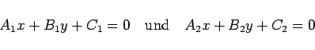
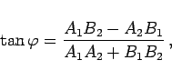
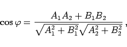
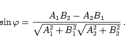
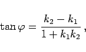
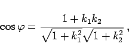
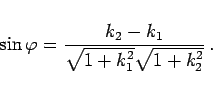
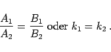
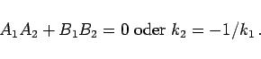

Inhalt Index DeskTop Bronstein

 Geometrie Vektoralgebra und analytische Geometrie Analytische Geometrie der Ebene Gerade
Geometrie Vektoralgebra und analytische Geometrie Analytische Geometrie der Ebene Gerade


|  | (3.333a) |
gegeben sind, dann gilt
|  | (3.333b) |
|  | (3.333c) |
|  | (3.333d) |
Mit den Richtungskoeffizienten k1 und k2 ergibt sich
|  | (3.333e) |
|  | (3.333f) |
|  | (3.333g) |
Dabei wird der Winkel  von einer Geraden zur zweiten im entgegengesetzten Drehsinn des Uhrzeigers gemessen.
von einer Geraden zur zweiten im entgegengesetzten Drehsinn des Uhrzeigers gemessen.
|  | (3.334) |
|  | (3.335) |